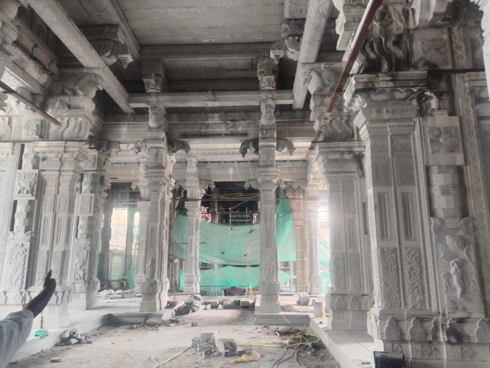
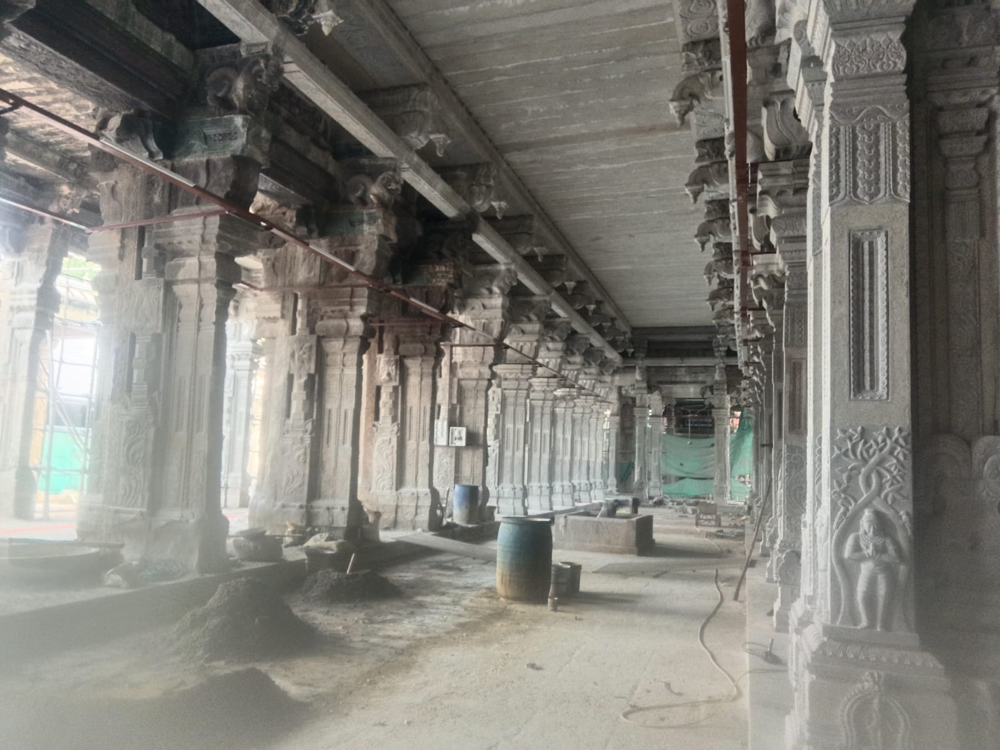

01
Temple Architectural Planning
Traditional planning and architectural design for temples based on established principles and proportions.

TRADITIONAL TEMPLE ARCHITECTURE
With over 30 years of experience in traditional temple architecture, we specialize in the planning, construction, renovation, and restoration of temples rooted in India's architectural heritage.
Our work brings together traditional knowledge, skilled craftsmanship, and careful architectural planning to create sacred spaces that respect the spiritual and cultural significance of every temple.
EXPLORE OUR TEMPLE WORKS →OUR EXPERTISE
Traditional planning and architectural design for temples based on established principles and proportions.
Complete temple construction with attention to traditional architecture, craftsmanship, and structural requirements.
Renovation and restoration of existing temples while preserving their traditional character and architectural identity.
Skilled traditional stone craftsmanship for pillars, sculptures, structures, and other temple elements.
ABOUT US
With more than 30 years of experience, our journey has been dedicated to the art and practice of traditional temple architecture.
Our work is inspired by India's ancient architectural traditions and the craftsmanship passed down through generations. From the initial architectural planning to construction and renovation, every stage is handled with respect for the temple's spiritual purpose and cultural identity.
We believe that a temple is more than a structure. It is a sacred space that carries history, devotion, tradition, and community.

OUR APPROACH
Every temple project is unique. We carefully understand the requirements of the temple, its location, traditional character, and the vision of the people associated with it.
Over three decades, we have worked on temple-related projects involving planning, construction, renovation, restoration, and traditional stone craftsmanship.
Our goal is to preserve the authenticity of traditional temple architecture while creating structures that can serve generations to come.
OUR VISION
TEMPLE WORKS
Every temple carries its own history, tradition, and architectural identity. Our projects are approached with careful planning and respect for the unique character of each sacred space.
📍 Madurai
📍 Madurai
📍 Samayapuram, Trichy
OUR SERVICES
We provide specialized services for temple planning, construction, renovation, restoration, and traditional craftsmanship.
Planning and designing temple structures with careful consideration of traditional architectural principles, proportions, layout, and functional requirements.
Complete construction support for temples, from architectural planning through execution, with emphasis on traditional methods and quality craftsmanship.
Renovation of existing temples while maintaining their traditional appearance, architectural character, and cultural significance.
Restoration work focused on preserving traditional architectural elements and restoring damaged or deteriorated temple structures.
Traditional stone craftsmanship for temple structures, pillars, architectural elements, and other stone components.
Guidance and consultation for temple construction, renovation, traditional design, architectural planning, and execution.
OUR COMMITMENT
GALLERY
Explore our collection of temple architecture, traditional stone craftsmanship, construction, renovation, and restoration work.
Traditional temple structures, architectural elements, and completed projects.
Detailed traditional stone work created by skilled craftsmen.
Selected moments from the temple construction process.
Before-and-after views and restoration work carried out to preserve traditional temple structures.
OUR CRAFTSMANSHIP
CONTACT US
Kumar Sthapathi
For temple construction, renovation, restoration, traditional stone work, architectural consultation, and project enquiries, please get in touch.